Bastidores das Edições
Cada apresentação, cada equipe, cada conquista — os melhores momentos de quem já viveu o Nexus por dentro.
1ª edição — onde tudo começou

Grupo de alunos e organizadores reunidos
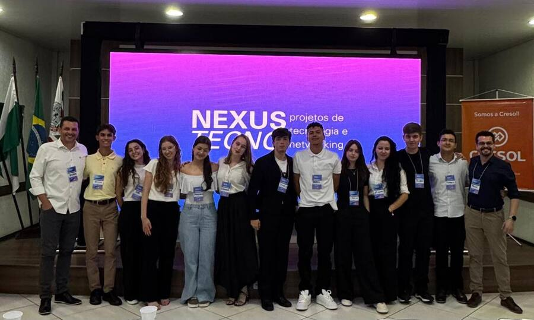
Equipe em frente ao telão principal
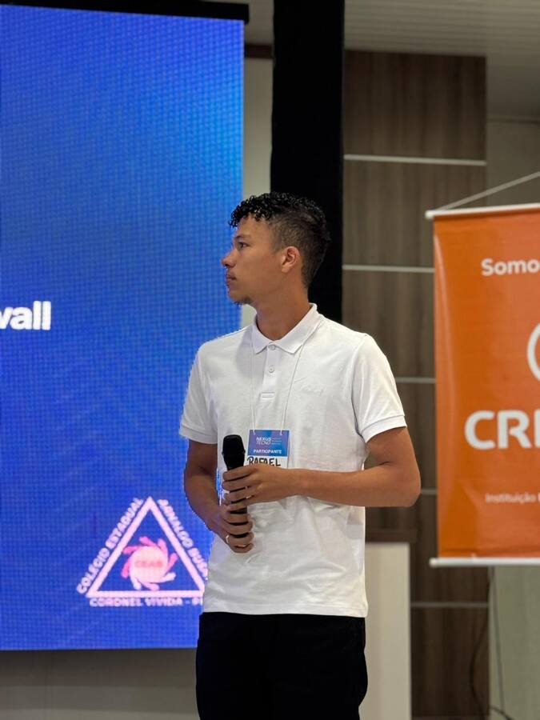
Apresentação do projeto de firewall
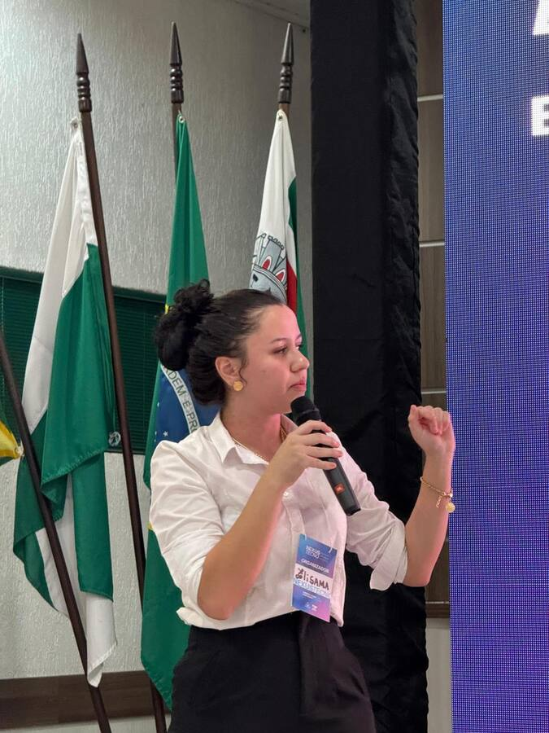
Organizadora conduzindo a abertura
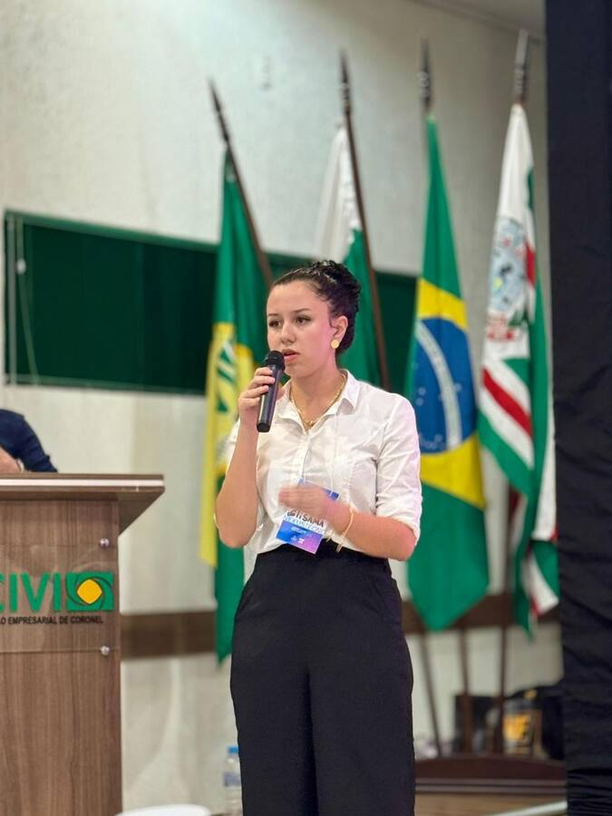
Participante discursando para o público
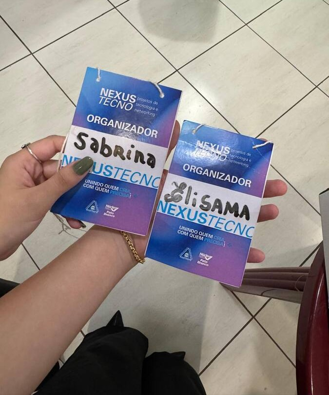
Crachás da equipe organizadora
2ª edição — a comunidade em peso
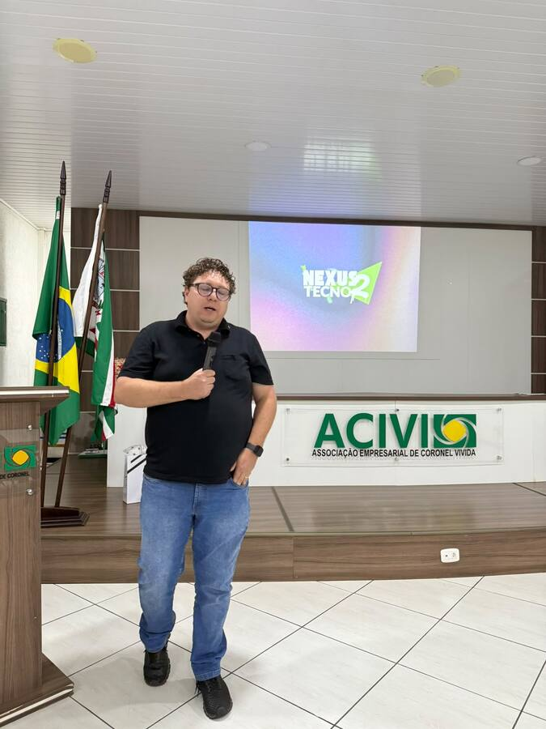
Abertura oficial na ACIVI
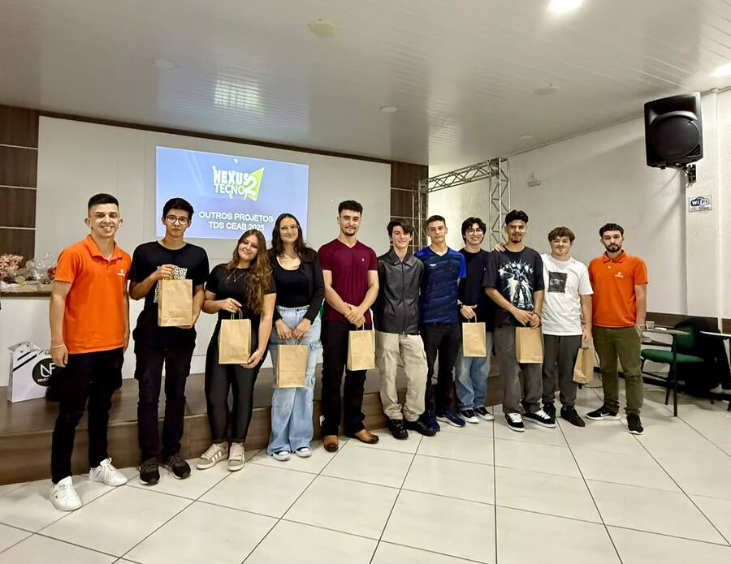
Entrega de kits aos participantes
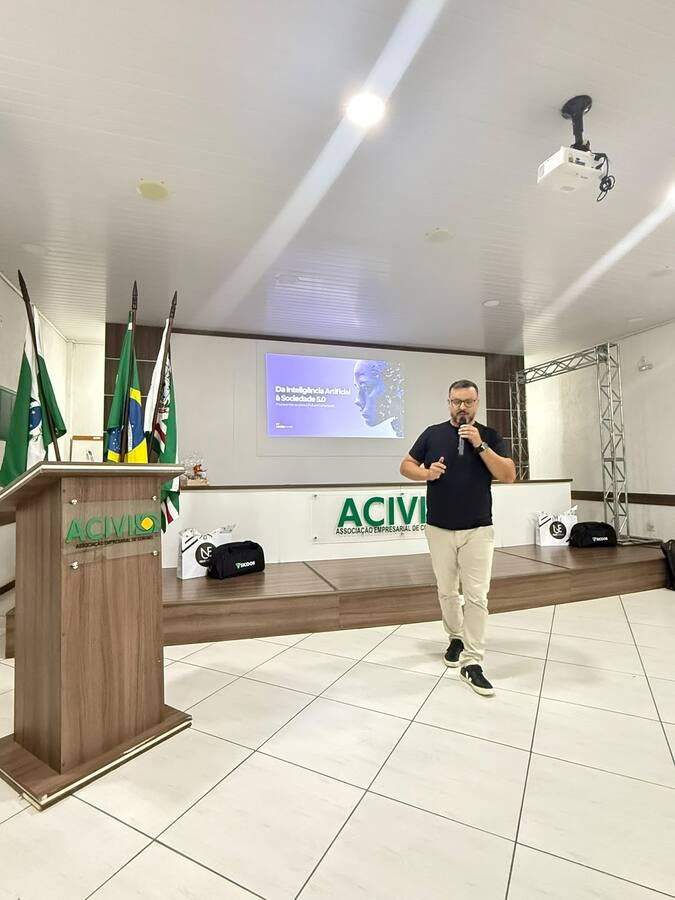
Palestra: Da IA à Sociedade 5.0
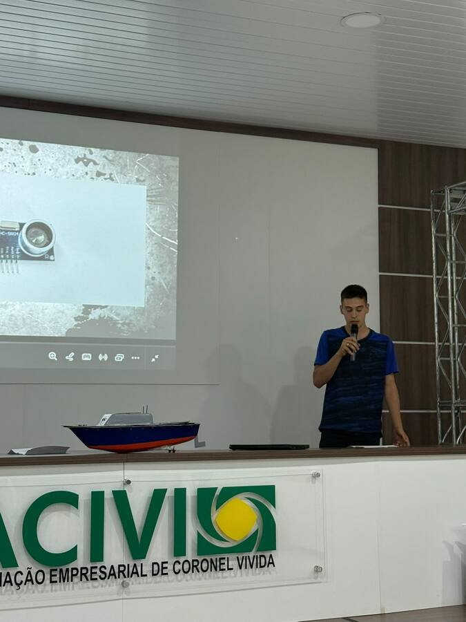
Projeto de barco com sensores
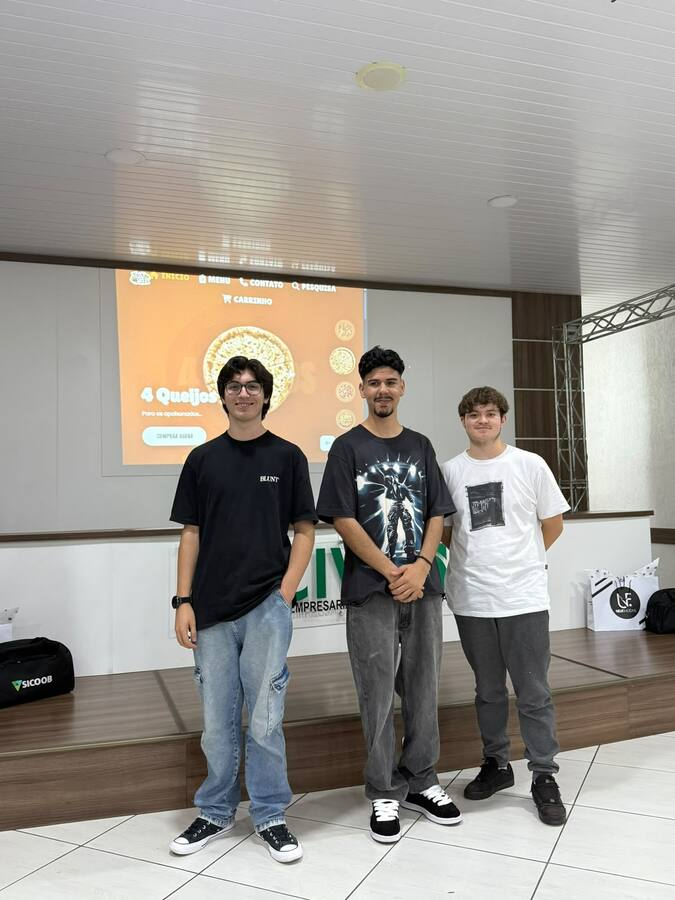
Equipe do e-commerce de pizzas
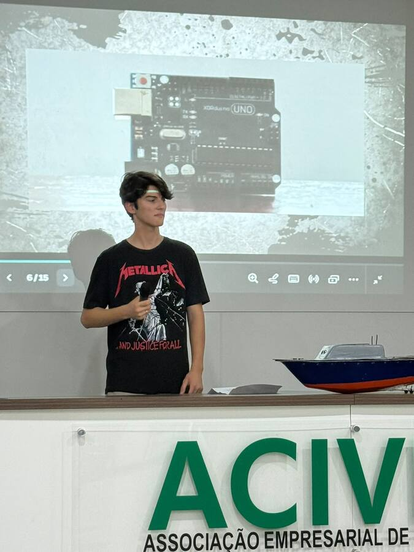
Protótipo com Arduino Uno
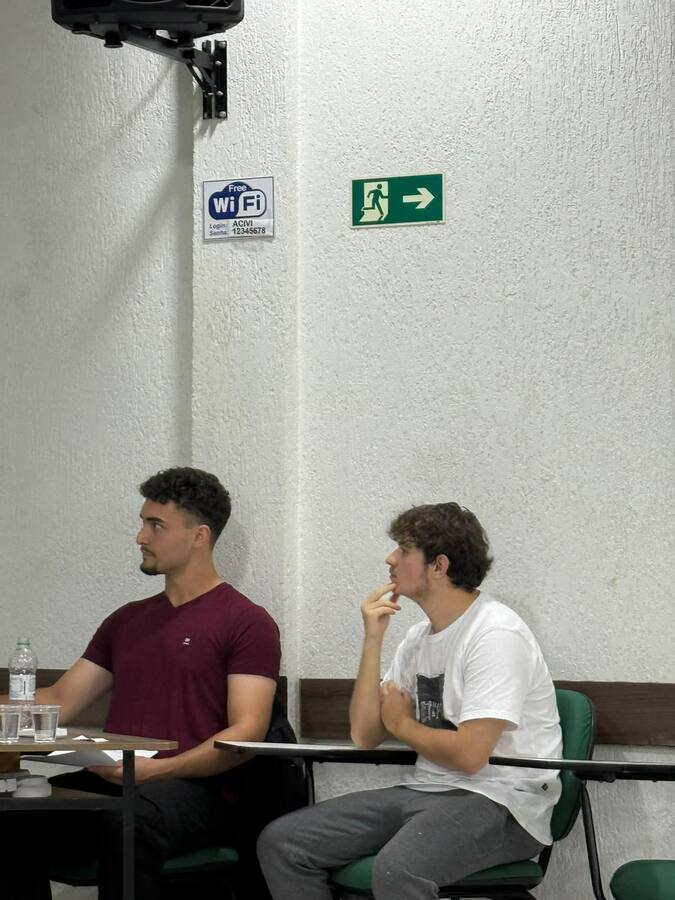
Plateia acompanhando as defesas
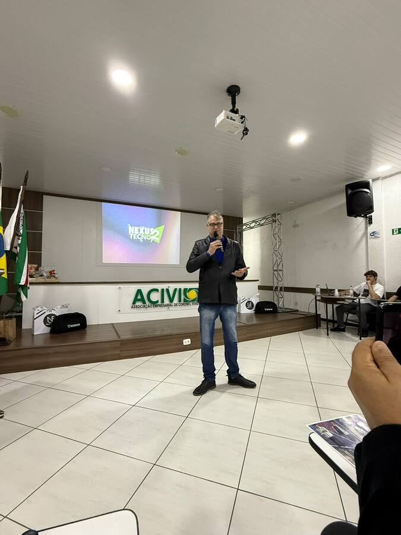
Encerramento da noite